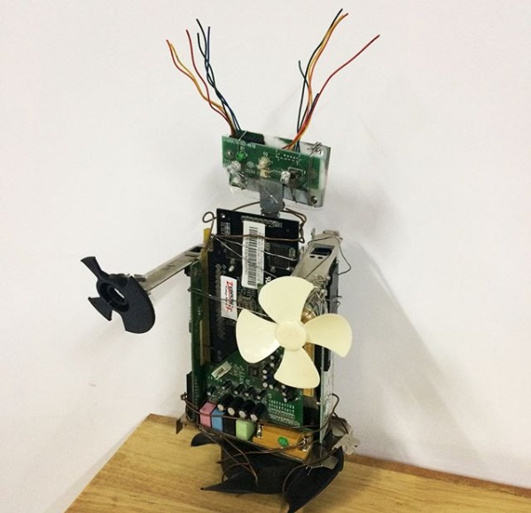
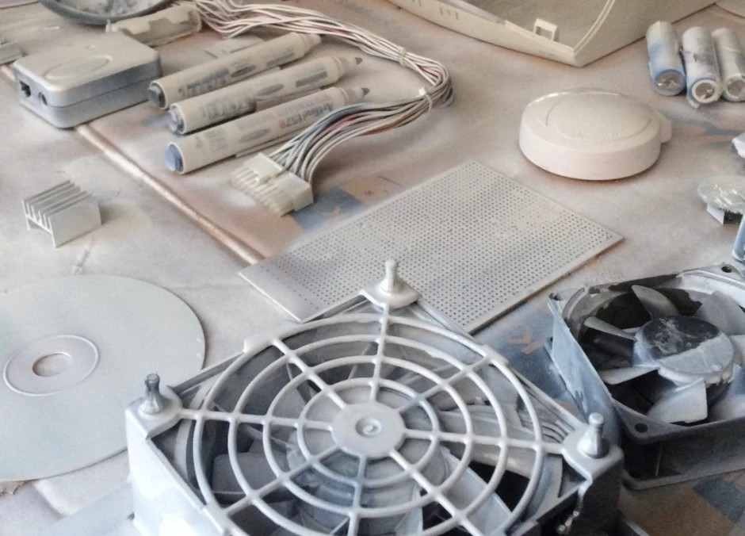
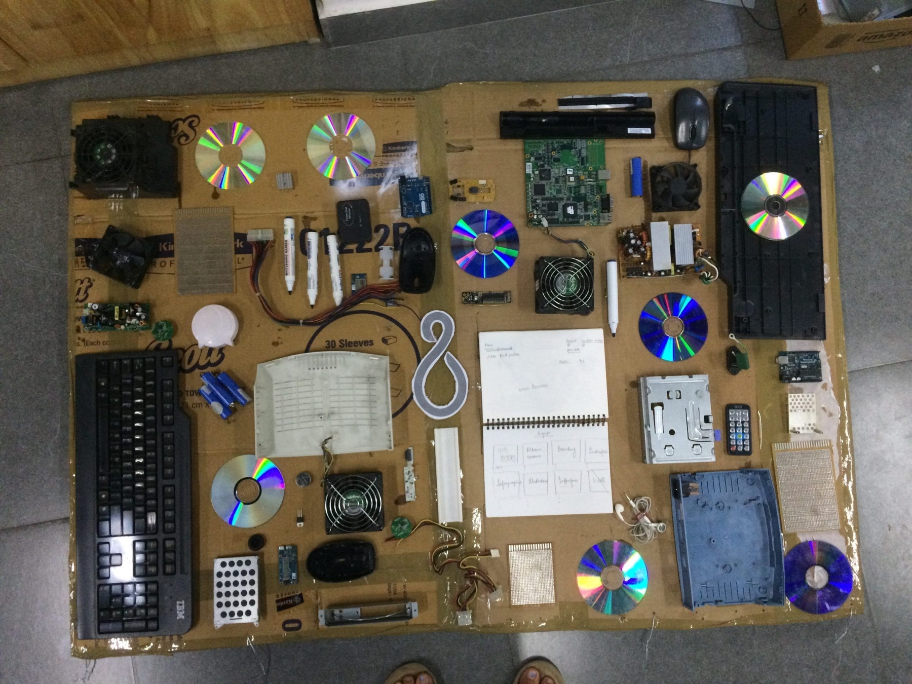
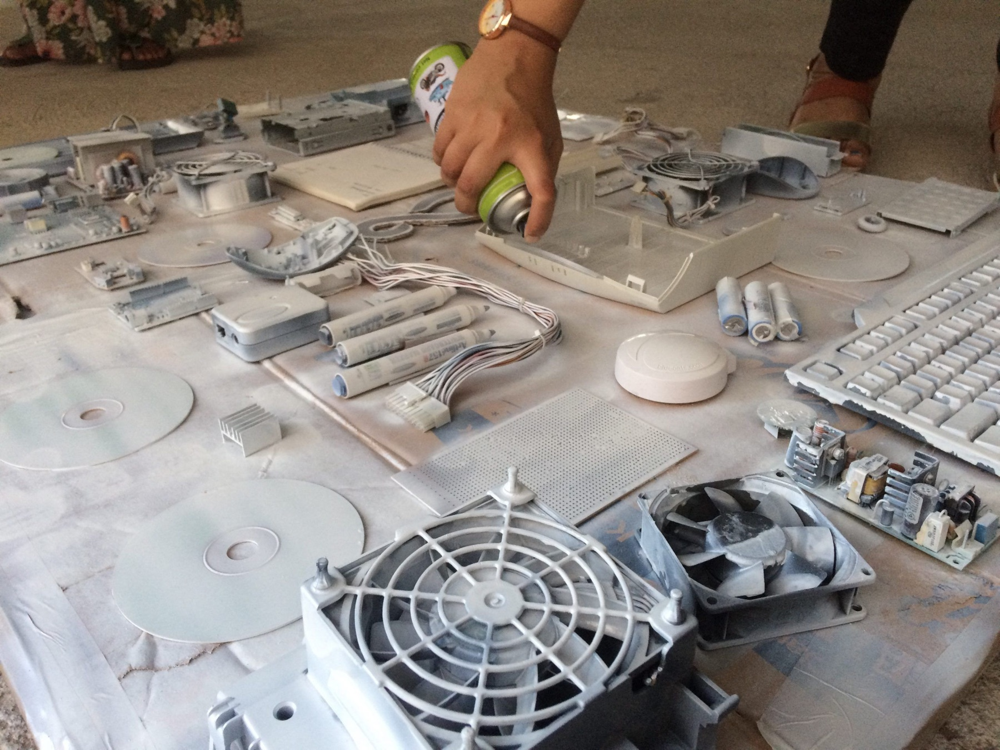
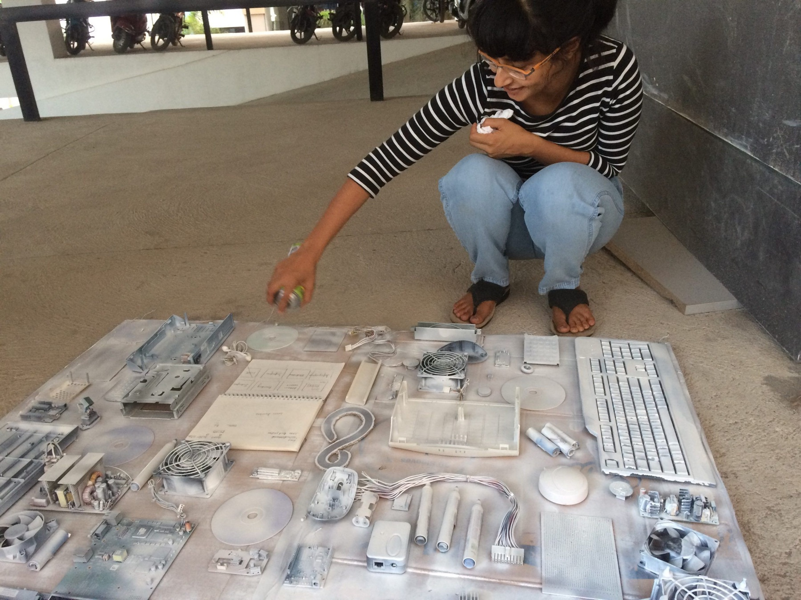
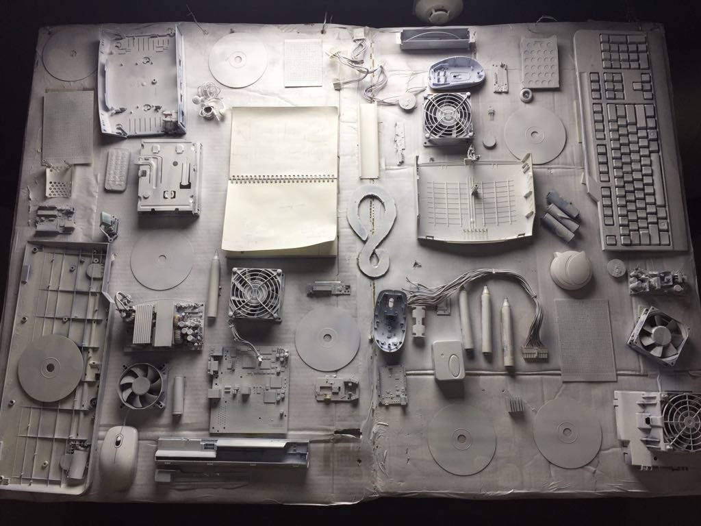
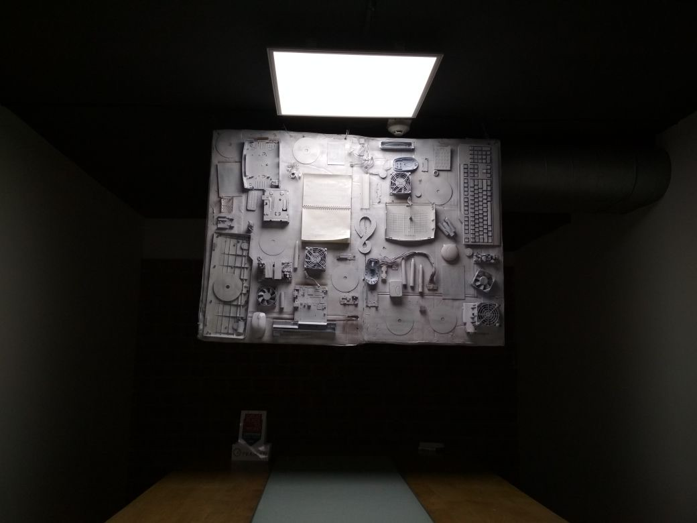
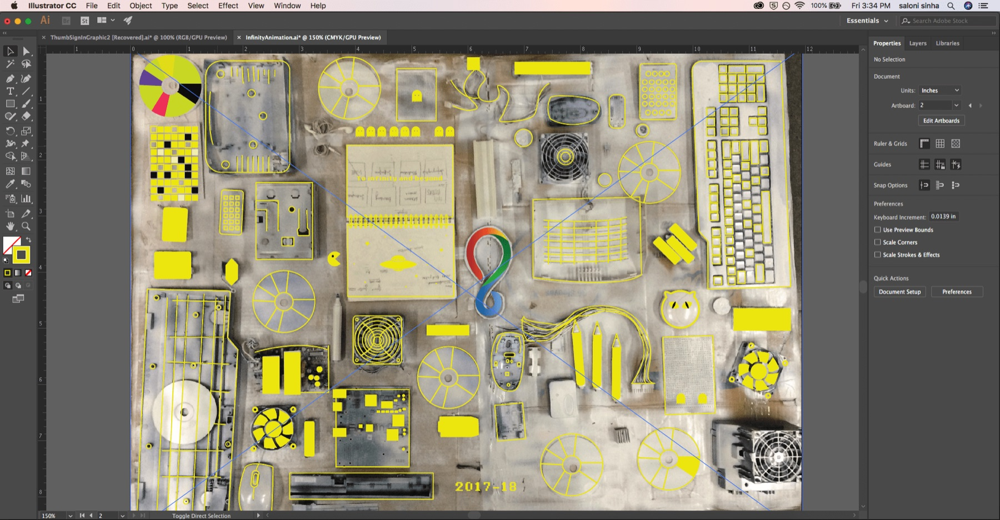
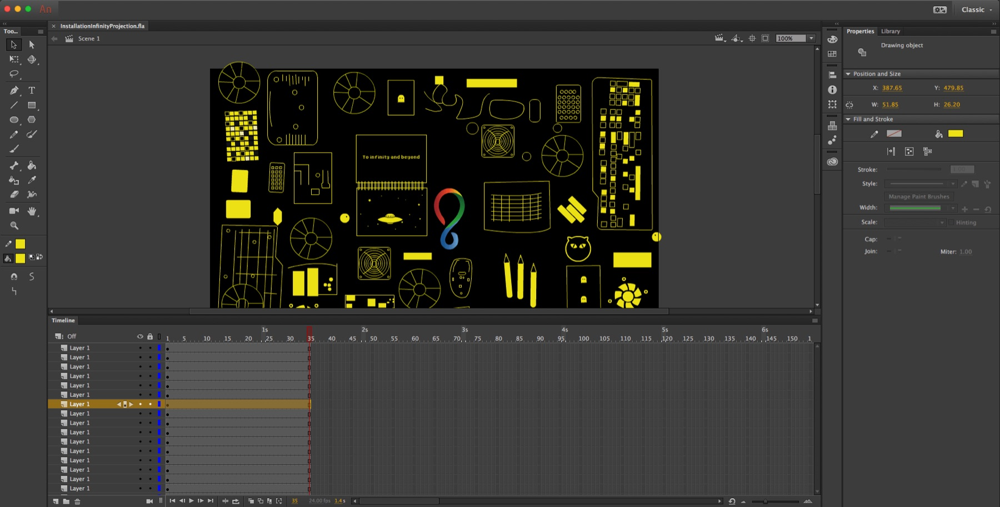

Junk in an Infinite Loop
Projection mapping installation
An installation made from computer junk and brought to life with projection mapping, looking at the infinite possibilities an object can serve in the consumer-based society we live in.
It was built in a single day for the company’s annual innovation day, themed ‘Data Eats Software’ and represented by Pac-Man.
Background
Junk is stuff you usually throw out, but you can reuse it for another purpose. Sustainable design is about putting objects back into the loop of creation once they have done their original job. Like Pac-Man, we consume all the time and leave a pile of waste behind.
The idea struck while I was clearing my office locker and found a junk keyboard, a few old mice and some waste chips. I noticed that junk objects make cool decor when they are painted in one colour.
The innovation day gave me the perfect chance to get creative in a limited timeline. I had only 24 hours, so I decided to piece together some computer junk and project animation onto it.
How might we give old computer junk a second life in just 24 hours?


Process
Collecting junk. The admin team had thrown out the computer junk three weeks earlier, so I went hunting for old modems, unused CDs, computer parts and electric appliances. Collaborators from marketing, design and engineering joined in, not knowing if I could pull it off.
Building the base. I folded a scrap carton box for the base and placed an infinity logo in the centre. Light pieces went on with double-sided tape, heavy ones with superglue, and the heaviest were wired in. A coat of white spray paint gave me a surface to project onto.
Animation and projection. With half the day gone, I made a looping 8-bit animation in the spirit of Pac-Man. I used Adobe Animate for frame-by-frame transitions and motion tweens, and Illustrator to trace and map the elements from a top shot of the base. I finished with some Pac-Man loop music.







Results
All in all, the experience was fun, intense and well appreciated.
My takeaways: keep it practical, easy to source and easy to implement; get people involved; and explore unconventional mediums.
The installation showed how much can be done with limited time, scrap material and a projector, and how a small team across design, content and development can make something together in a day.